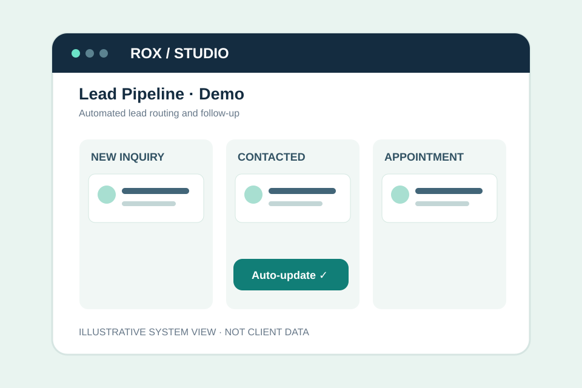
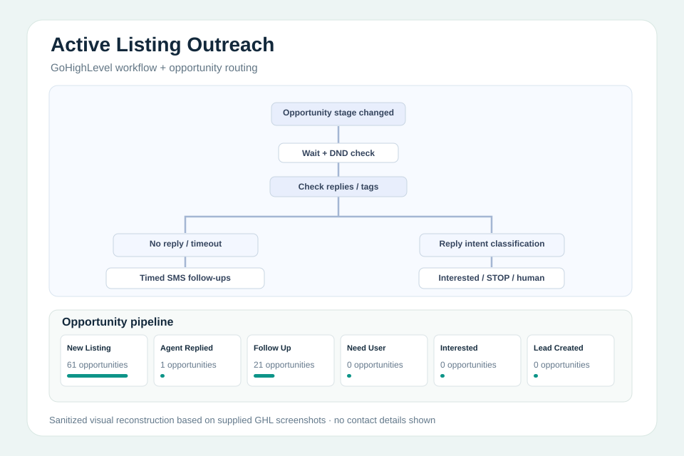

Make the CRM do the repetitive work.
GoHighLevel pipeline configuration, lead routing, tags, notifications and follow-up automations for real estate teams.
Request a consultation ↗
What this service includes.
- CRM pipeline architecture and stages
- Lead capture and contact field mapping
- Tags, lead routing and agent notifications
- Follow-up workflow design and QA testing
- Reporting views and handover documentation
A clear example of the approach.
A website property inquiry enters GHL, creates a contact and opportunity, assigns an agent, and sends an internal notification. A subsequent message is sent only where consent permits.
The diagram in this section is an illustrative example. A separate real-workflow showcase appears below; confidential contact information is not published.
Plan → Build → Test → Improve
Platforms behind the work.
These tools support delivery; they are not separate service offerings.
Active Listing outreach and opportunity routing.
A real GoHighLevel workflow and opportunities pipeline from a real estate outreach project, shown through a privacy-safe visual reconstruction. The original screenshots are retained in the Project Rox portfolio library.

Reply-aware SMS outreach automation
Opportunity-stage entry initiates an SMS outreach sequence with suppression-tag checks, response classification, follow-up delays and opportunity updates.
Positive responses route toward qualification and agent follow-up. STOP replies exit the active sequence; uncertain replies can route to a human owner or AI-assisted conversation.
Let's build a system around your next lead.
Tell us about your marketing priorities, CRM challenges, and what your team needs next.
Open consultation form ↗